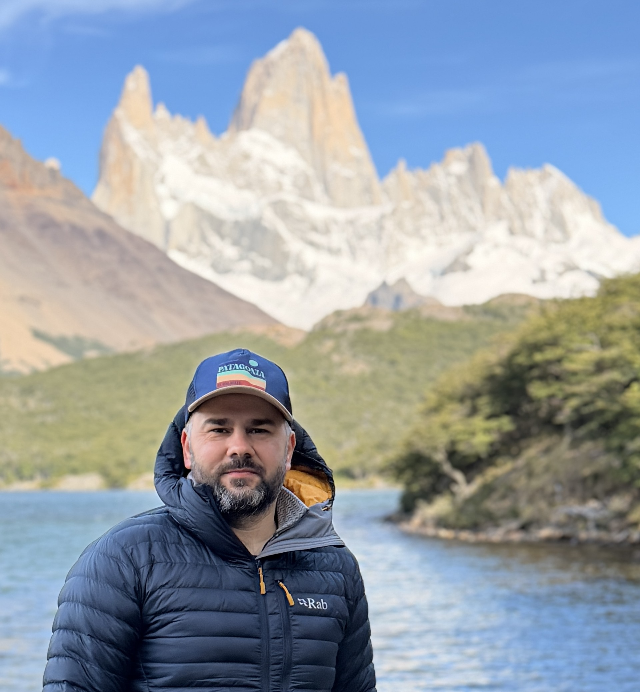

The keynote speakers at ICS 2026 will be
Keynote descriptions are being provided on this page as they become available. Keynote information will be incorporated into a program later. The order in which they are presented below is not necessarily the order in which they will be assigned during the conference.
Title: Scaling AI Computing Sustainably: A Journey Towards Sustainable AI
Speaker: Dr Carole Jean Wu, Director of AI Research at Meta
Abstract: The past 50 years have seen a dramatic increase in the amount of compute capability per person, in particular, those enabled by artificial intelligence. It is essential that AI, the twenty-first century’s most important technology, be developed with sustainability in mind. I will highlight key efficiency and sustainability optimization opportunities for cutting-edge AI technologies across an AI model’s life cycle. To scale AI sustainably, we must also go beyond efficiency. I will talk about optimization opportunities across the life cycle of computing infrastructures, from hardware manufacturing to datacenter operations and end-of-life processing for the hardware, capturing both the operational and manufacturing carbon footprint of AI computing. Based on the industry experience and lessons learned, I will share key challenges and opportunities on the horizon for at-scale optimization. This talk will conclude with important development and research directions to advance AI computing sustainably.
Bio: Carole-Jean Wu is a Director of AI Research at Meta, leading the Systems and Machine Learning Research team. She is a founding member and a Vice President of MLCommons – a non-profit organization that aims to accelerate machine learning innovations for everyone. Dr. Wu’s expertise sits at the intersection of computer architecture and machine learning with a focus on performance, energy efficiency and sustainability. Dr. Wu is the recipient of the 2025 ACM SIGARCH Maurice Wilkes Award. Her work has been recognized with several IEEE Micro Top Picks and ACM/IEEE Best Paper Awards. In particular, her work in sustainability has influenced adoption in data center infrastructures at scale. She is in the Hall of Fame of ISCA, HPCA, IISWC, and serves on the study committee of the National Academies. Prior to Meta/Facebook, she was a tenured professor at ASU. Dr. Wu earned her M.A. and Ph.D. from Princeton and B.Sc. from Cornell.
Title: An Open-Source-First Approach: Multi-Level Compiler Design for AI and HPC
Speaker: Dr Tobias Grosser, Associate Professor in Compiler Design, University of Cambridge
Abstract:
Writing compilers yourself (or understanding them in great detail) has become mission-critical for performance engineers in HPC and AI. HPC engineers still rely on high-performance C++ or Fortran compilers, OpenMP and MPI, and CUDA to program their applications. Yet, highly specialized hardware accelerators from Tenstorrent, Cerebras, and Nextsilicon, as well as higher-level programming models from NVIDIA, have widened the programming surface one needs to master to attain peak performance. While a plethora of new programming models are used to increase accessibility, designing a custom domain-specific compiler stack is surprisingly often an impactful option. In the following talk, I share my experience building multi-level compilers, from HPC to AI, within the MLIR ecosystem, covering MLIR’s GPU dialect and its use for scientific computing, MLIR’s first-class MPI support, our work on targeting Cerbera’s Waverscale engine, and our most recent effort of opening the LLVM backend at the ISA-level using MLIR – often using Python to accelerate development. I then discuss how our open-source-first research approach enabled us to deliver practically informed research that scales to real workloads, while contributing ideas and code back to the wider open-source ecosystem and helping to make compiler design a powerful tool for HPC and beyond.
Bio: Tobias Grosser is an Associate Professor at the University of Cambridge. Before, he worked as a Reader at the University of Cambridge, as an Ambizione Fellow at ETH Zurich, and as a Google PhD Fellow at INRIA/Paris IV/ENS Paris. Tobias and his research group have a decade-long history of contributing to the LLVM ecosystem. Tobias developed polyhedral loop optimizations in LLVM/Polly, worked on hardware design with LLHD/CIRCT, and co-developed the xDSL Python-Native MLIR-style compiler framework, which is used to target low-power AI accelerators or quantum computers. Over the last few years, he started to look into formal methods in the context of the Lean ITP.
Title: Destination Earth: Digital twins of the earth system on Europe’s most powerful supercomputers
Speaker: Dr Ioan Hadade, Principal Computational Scientist and Team Leader of the HPC Applications team at the European Centre for Medium-Range Weather Forecasts (ECMWF)

Abstract: Destination Earth (DestinE) is a flagship initiative by the European Commission aimed at developing highly accurate digital replicas — or digital twins — of the Earth system to improve our ability to predict extreme weather events and to better understand and adapt to climate change. Building and operating these digital twins requires unprecedented computational performance, advanced numerical modelling, and strong collaboration between the weather, climate, and high-performance computing communities. This talk will present ongoing progress in the development and operation of the Weather-Induced Extremes and Climate Change Adaptation digital twins on Europe’s largest supercomputing infrastructures. It will cover the Digital Twin Engine, the underlying software infrastructure that enables the deployment and operation of the digital twins, as well as the practical challenges of scaling complex weather and climate models across diverse HPC architectures. Finally, the importance of well-designed workflows — both to ensure quality control and reliable execution of the digital twins, and to enable downstream applications to efficiently consume their data — will also be discussed.
Bio: Ioan Hadade is a Principal Computational Scientist and Team Leader of the HPC Applications team at the European Centre for Medium-Range Weather Forecasts (ECMWF). Ioan’s responsibilities at ECMWF include the optimisation and benchmarking of the IFS and AIFS weather forecasting models and the exploration of future high-performance computing technologies to support ECMWF’s operational weather forecasting activities. Ioan’s team is also heavily involved in supporting ECMWF in the Destination Earth initiative by porting and optimising ECMWF’s weather forecasting models on EuroHPC supercomputers in order to enable the efficient operation of the Weather-Induced Extremes and Climate Change Adaptation digital twins on these platforms. Prior to joining ECMWF, Ioan was a Postdoctoral Research Assistant at the University of Oxford and a Research Fellow at the University of Surrey where he worked on the optimisation of computational fluid dynamics codes used for the design of aero engines. Ioan holds a PhD from Imperial College London and an MSc in High Performance Computing from the University of Edinburgh.